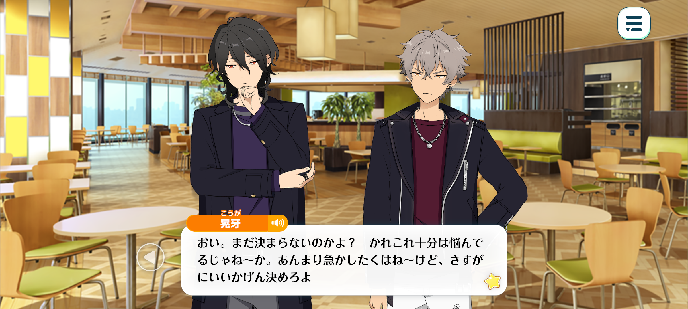
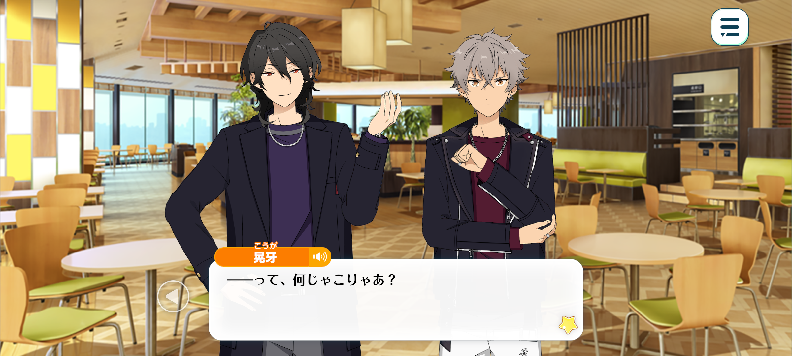
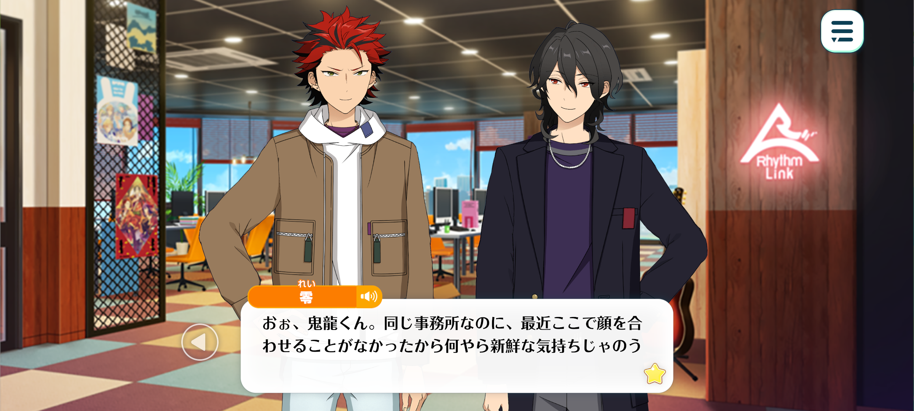

The King Beneath The Moonlight | Chapter 1
Idol Story (FS2)


Season: Winter

Rei: Hmm... What to do, what to do...
Koga: Oi. You still haven’t decided? Haven't ya spent long enough agonising over it? I ain't tryin' to rush ya or anything, but it'd probably be best if ya just made up your mind already.
Rei: I'm afraid it's not quite so simple. The cafeteria has such a vast selection of dishes that I'm positively spoilt for choice. Goodness, I simply can't decide what to have.
Why, just perusing the menu alone is enough to satisfy my appetite!
Koga: Oi... Aren't ya getting a little ahead of yourself?
Rei: Very well, Koga! Let us conduct a little reconnaissance. Go and scout out the cafeteria. Find out what everyone else is having!
Koga: Aye aye! Leave it to me!
—Tch! Are ya trying to piss me off!? What makes ya think I'd actually do something like that!?
Rei: You've seen right through me. What a shame. And here I thought I had you fooled... I'm rather impressed, Wanko.
—Hm? Who was that? I'm sure I just heard my name...
Oya, it's the Little Miss. Yes, yes, thank you for all your hard work. Was it you who was calling for me?
It's lunchtime, after all. Why don't you join us?
Koga: Hey, what's wrong? You've got a pretty gloomy look on your face. Somethin' happen?
Rei: Hm? Ah, you've brought the photographs from the Feature Live photoshoot.
Koga: What the—? C’mo, give us a smile then. Your face doesn't exactly match what you're doing, y'know?
Rei: Indeed. Is there something you'd like to tell me? Has something happened?
Hm? There's a problem with the photographs, and they can no longer be used?
I see... I'm afraid there's not much I can do without seeing them for myself. Would you mind letting me have a look?
Koga: Lemme see too…
—The hell are these?
This one's the vampire bastard practically melting under the studio lights, and this one's him snoozing away in the coffin I brought to the green room!
Are ya seriously trying to pass these off as cute and innocent to cover up for all the mistakes ya made...? Don't tell me there aren't any decent shots in here~?
Well, if these are supposed to show Sakuma-senpai's offstage persona, then I guess they'll do. But otherwise? Useless.

Rei: Ehhh~? Now, now, that's hardly true. They're candid photographs, and there's a certain charm in that contrast, don't you think? Look, isn't this one rather adorable?
Koga: Well, uh... Ya gotta think about striking the right balance, too.
Even though it's for a solo live, all the other guys have got these charming photos of themselves. It'd be pretty lame if yours was the only one that looked so laid-back, ya know?
Just 'cause you're showing people a side of yourself they don't usually see onstage doesn't mean ya can slack off! Aren't ya the leader of an extreme and immoral unit!?
Rei: Hmm... Is that how the Little Miss sees it as well?
I see. Goodness me... What a troublesome predicament. But if that's what you both think, then I suppose I'll have to have them retaken...
Now then, Little Miss. Would you be so kind as to make room in your schedule for me once more?
Time: One week later

Kuro: Huh? Yo, Sakuma.
Rei: Ah, Kiryu-kun! Though we share the same office space, I feel as though I haven't seen you around much lately. It's rather refreshing, in its own way.
Kuro: Well, even if we don't run into each other here, we'll see each other back at the dorms.
Rei: But enough about that. What brings you to the office today?
Kuro: Huh? Me? I was told to come pick up the script for next week's recording. Speaking of which, weren't you involved in it too?
Rei: Ahh, so this is the script I just received?
In other words, I'll be working alongside AKATSUKI? How wonderful. I do look forward to it.
Kuro: Ah, yeah. Same here.
Rei: Hm? Could that be the Little Miss, peeking out from behind Kiryu-kun's rather imposing frame?
Kuro: Huh? ...Oh, Jou-chan. Didn't notice you there.
Oh, am I blocking your way? Sorry about that.
Rei: I see. You were looking for me? Once again?
Ah, you've brought the new photographs! Come, come, let me have a look.
Kuro: Heh. These really feel like you, Sakuma. The fans'll love 'em, right?
Rei: Indeed. If they've earned Kiryu-kun's seal of approval, then surely they'll do splendidly.
Oya? It seems the Little Miss isn't quite convinced just yet...?
Kukuku... Personally, I don't see anything wrong with them.
After all, it's not only the Producer who looks up to the idol. The idol, too, looks up to the Producer.
Is there something troubling you?
I see... You don't think they feel enough like me, you say? That they're missing some special ingredient to really make them stand out...? Hmm...
Yes, that's rather difficult to put into words, isn't it?
Eh? Never mind? Then what is it that's bothering you?
I see. So that's why you think the photographs are perfectly fine after all? Splendid! Then everything is in order.
…
No... I understand. Please, carry on just as you are.
If the Little Miss, the esteemed Producer, says they're fine, then I'll gladly take her word for it.